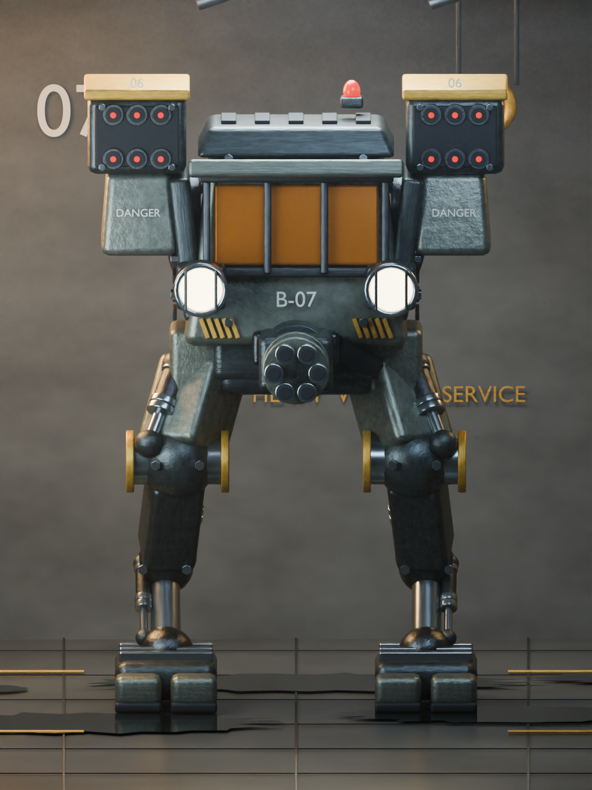
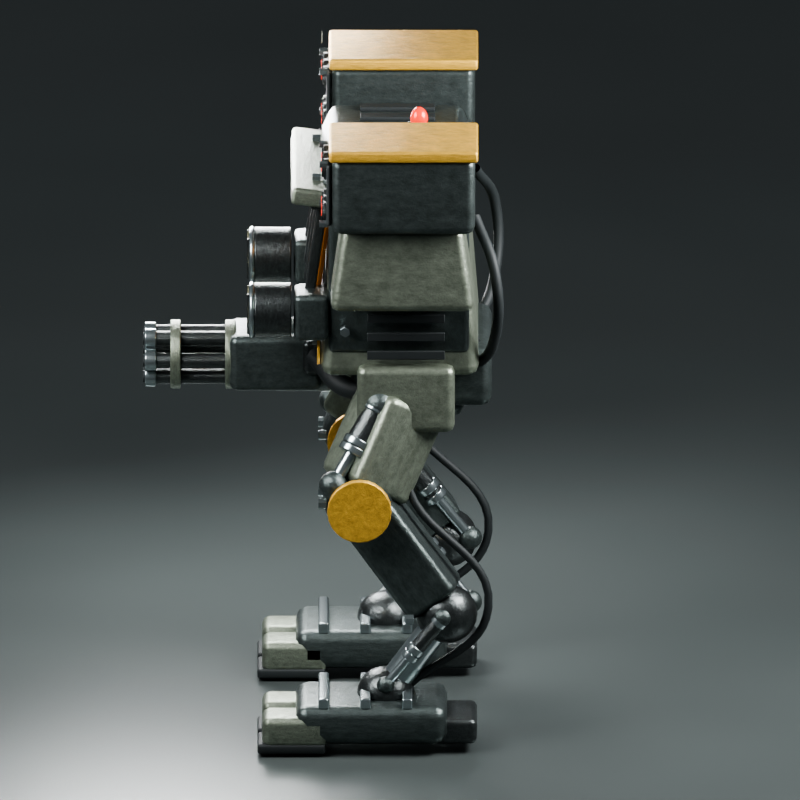
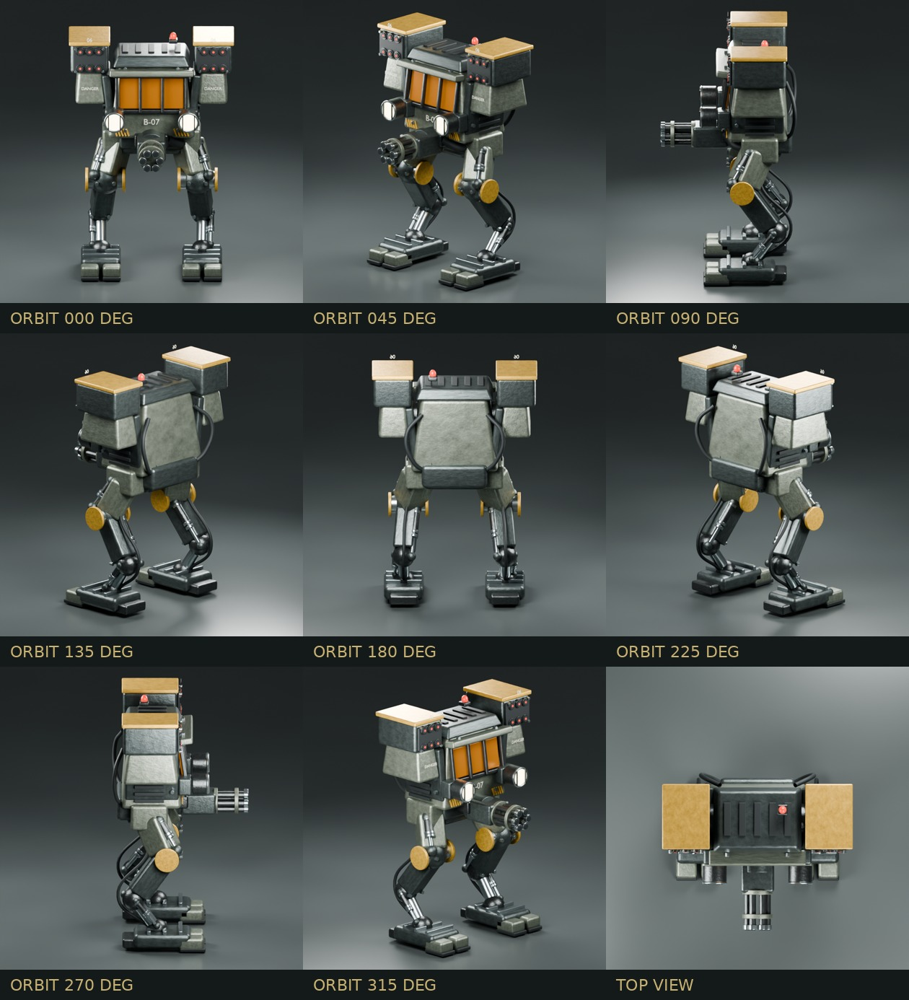
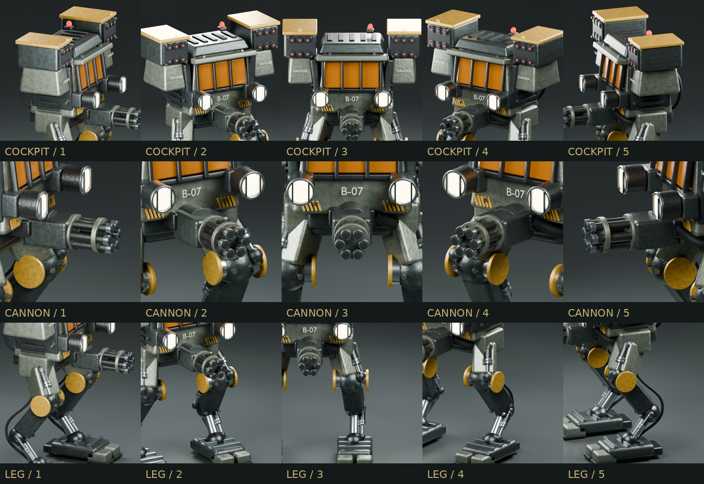

강화 앰버 블라스트 실드
세 개의 앰버 패널과 금속 보호 프레임, 상부 장갑 브라우로 조종실을 방호합니다.
INDUSTRIAL BIPEDAL COMBAT WALKER
지하 격납고의 중장갑 전투 워커
초기 2000년대 PC 밀리터리 게임의 거친 감성. 강화 앰버 조종실, 역관절 유압 다리, 어깨 미사일 포드와 다연장 유틸리티 캐논을 갖춘 오리지널 3D 콘셉트입니다.
드래그로 회전, 휠·핀치로 확대합니다. 레이어 버튼으로 유압 신축·캐논 사격·포탑 선회를 겹쳐 재생할 수 있습니다.
정면에서는 대칭적인 장갑 구성을, 측면에서는 무릎이 앞으로 나오고 종아리가 뒤로 꺾이는 역관절 구조를 확인할 수 있습니다.


장갑 표면의 마모, 볼트와 리브, 노출 피스톤, 유압 호스, 보호 프레임을 각각 모델링했습니다.
세 개의 앰버 패널과 금속 보호 프레임, 상부 장갑 브라우로 조종실을 방호합니다.
양 어깨의 12발 발사관과 조종실 하부 회전 마운트의 다연장 캐논을 배치했습니다.
상부 액추에이터와 하부 크롬 램, 분리형 발가락과 넓은 트랙션 패드로 하중을 받습니다.
여덟 방향과 상단 뷰. 배경 없는 중립 조명으로 실루엣과 기계 구조를 확인했습니다.

조종실, 캐논, 오른쪽 다리를 각각 다섯 각도에서 확대한 검수 이미지입니다.

수정 가능한 Blender 원본과 범용 GLB 모델, 고해상도 전신 이미지를 제공합니다.
콘셉트 디자인용 정적 모델입니다. 리깅·애니메이션·게임용 LOD는 포함하지 않습니다. GLB에는 메카만 포함되며, 지하 격납고와 조명은 Blender 원본에서 편집할 수 있습니다.